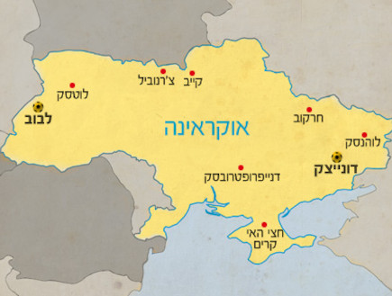
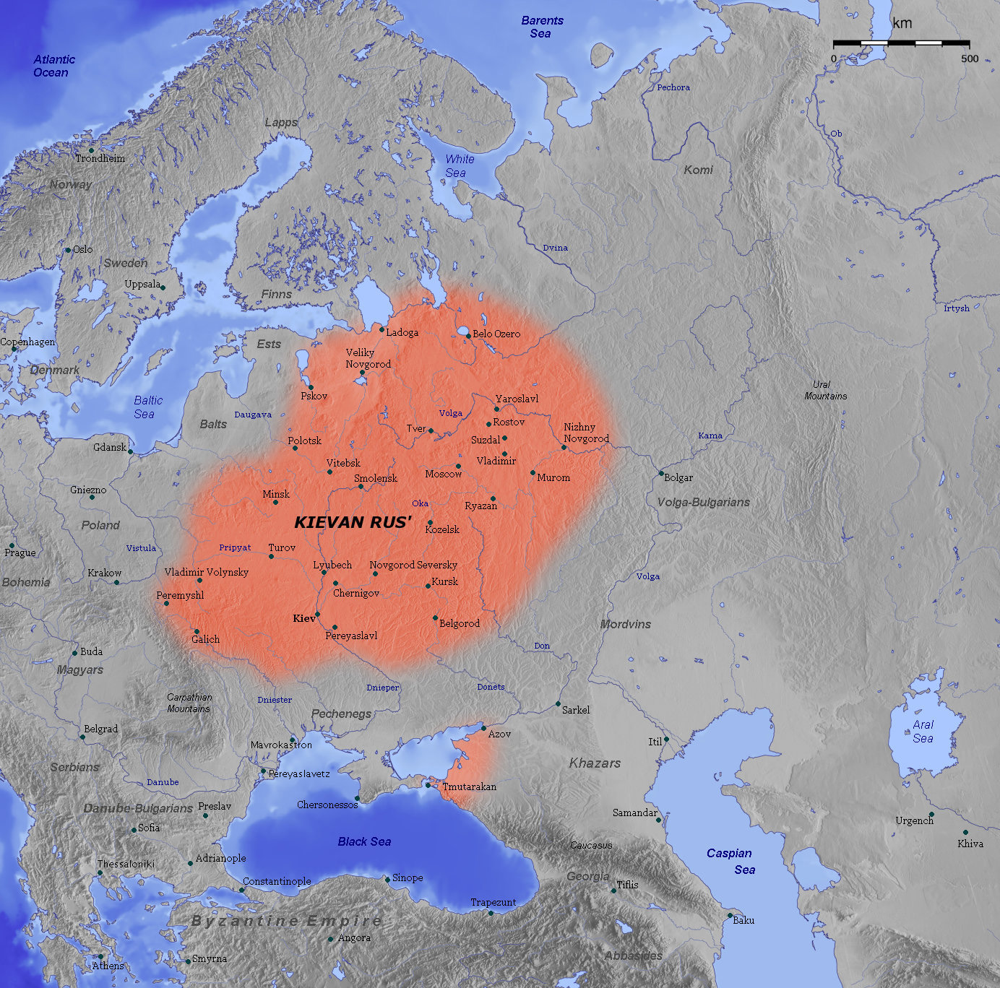
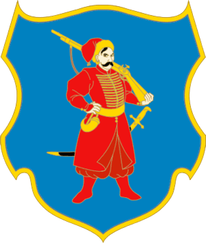

ערים באוקראינה
תיירות באוקראינה
אוכל
צבא אוקראינה
דף ראשי
|
ערים באוקראינה
|
תיירות באוקראינה
|
אוכל
|
צבא אוקראינה
|
דף ראשי
|
| ימי קדם : | ||
| לאוקראינה היסטוריה עשירה ומרתקת, עם עדויות להתיישבות אנושית משנת 32,000 לפני הספירה. התרבות הגראוטית שגשגה בהרי קרים בתקופה זו, עם עדויות לפעילותם שנמצאו ברחבי האזור. בשנת 4,500 לפני הספירה, תרבות הקוקוטני-טריפיליה הנאוליתית שגשגה בחלקים רבים של אוקראינה של ימינו, כולל טריפיליה וכל אזור הדנייפר-דנייסטר. תרבות זו ידועה בכלי החרס המשוכללים שלה ובהישגיה הארכיטקטוניים המרשימים, כולל יישובים גדולים שאולי אכלסו עד 20,000 איש. בנוסף להישגיהם התרבותיים המרשימים, גם תושבי אוקראינה העתיקה מילאו תפקיד חשוב בביות הסוס. הדעה הרווחת היא שהסוס בויית לראשונה באוקראינה, שם הוא הפך לחלק חשוב מהכלכלה והתרבות המקומית. השערת קורגן מציבה את אזור הוולגה-דנייפר באוקראינה ודרום רוסיה כמולדת הלשונית של הפרוטו-הודו-אירופאים, מה שמרמז שהאזור מילא תפקיד משמעותי בהגירות המוקדמות של עמים הודו-אירופיים. בתקופת הברזל, הארץ שהיא כיום אוקראינה הייתה מיושבת על ידי עמים שונים דוברי איראן, כולל הקימרים, הסקיתים והסרמטים. עמים אלו היו לוחמים וסוחרים מיומנים, ועד היום ניתן לראות את השפעתם בכל האזור. |  | |
| רוס של קייב | ||
| בשלהי המאה התשיעית התקיימה באזור הדנייפר ובסביבותיו נסיכות סלאבית גדולה שבירתה הייתה קייב, ושנודעה בשם "רוּס". מקורותיה של המדינה לוטים בערפל, מידע מוצק אודות רוס מתחיל להופיע ב-878, עת הפליג במורד הדנייפר נסיך מבית רוריק בשם הֶלגי (אולג או אולה בגרסה הסלאבית). ב-882 רצח את שליטי קייב ותפס את נחלתם, כשהוא הופך את העיר לבירתו. הוא נלחם בכוזרים והדף אותם, פשט על ביזנטיון ב-907, והכפיף למרותו את רוב הסלאבים. עד מותו ב-912 הרחיב את גבולות רוס ממפרץ פינלנד ועד לים השחור. יורשו אינגבָר (איגוֹר או איהוֹר) נהרג במרד; אלמנת אינגבר, הֶלגה (אולגה או אולהה), שמשלה כעוצרת, התנצרה והביאה לנסיכות את הדת הביזנטית. בנה סביאטוסלב, הראשון בנסיכי קייב לשאת שם סלאבי שהעיד על ההיטמעות של השושלת בתרבות נתיניה, שמשל בפועל מ-964, נותר עובד אלילים למרות מאמצי אמו. תוך מספר שנים הוא הכה את הכוזרים וחיסל את ממלכתם, והרחיב מאוד את שטחי שליטתו. ב-988 אימץ הנסיך ולדימיר (וולודימיר) "הגדול" את הנצרות האורתודוקסית כדת המדינה, וכונן קשר עמוק עם ביזנטיון, שהיה בעל השפעה מכרעת על תרבותם של הסלאבים המזרחיים. פטריארך קונסטנטינופול הכיר בכך שראש הכנסייה של קייב היה ה"מטרופוליט של כל רוס". מות ולדימיר ב-1015 גרר מלחמת ירושה הרסנית בין בניו; גודלה של הממלכה הקשה על כל טוען לכתר לבסס את שלטונו. ב-1024 הגיעו שניים מן הבנים, ירוסלאב ששלט בנובגורוד ומסטיסלאב שמשל בצ'רניהיב, לכדי פשרה שחילקה בפועל את רוס לשני אזורי השפעה תחת מרותם. עם מות מסטיסלאב ב-1036, נותר ירוסלאב כשליט יחיד ועבר לקייב. מלכותו הארוכה, עד מותו ב-1054, הייתה תקופה של שגשוג חסר תקדים: הוא פיאר את הבירה במבנים חדשים, כרת בריתות נישואין עם רבות משושלות אירופה, ניצח במספר מסעות מלחמה, ותיקן קובץ חוקים. |  | |
| ירוסלאב ביקש לייצב את הליך הירושה כדי למנוע עוד מלחמות אזרחים, וחילק את רוס לחמש נסיכויות, אחת לכל אחד מבניו. הבכור נועד לשלוט בקייב ובנובגורוד, הערים המרכזיות, ולכהן כנסיך הגדול של רוס; עם מותו, הכס לא עבר לבנו, אלא לאח-הנסיך הבא. הסדר החדש לא הגשים את התקוות שנתלו בו, וסכסוכי ירושה פרצו מיד. ב-1097, התכנסו נסיכי רוס בליוּבֶּץ' והשיבו את העיקרון של ירושה מאב לבן. כינוס ליובץ' תרם פחות לאחדות הממלכה המבוזרת מעלייתו לכס בקייב ב-1113 של ולדימיר מונומך, שהצליח שוב למשול כשליט יחיד ברוס. עם מות יורשו, מסטיסלאב, ב-1132, תמה אף מראית העין של ממלכה אחת. רוס נעשתה לערב-רב של ישויות עצמאיות ומסוכסכות. הנסיכים אמנם לחמו על קייב, אך התמקדו בביסוס נחלותיהם העצמאיות. ב-1169 שרף הנסיך אנדרי בוגולובסקי את העיר, ולא טרח להשתקע בה אלא שב לביתו; ב-1203 היא נכבשה ונבזזה שוב על ידי הנסיך רוריק רוסטיסלביץ'. העוצמה הפוליטית זלגה מן הבירה הישנה לשלושה מוקדים עיקריים: נובגורוד בצפון, נסיכות ולדימיר במזרח (שהתפתחה בהמשך לנסיכות מוסקבה), ובשטחה של אוקראינה המודרנית, נסיכות גליציה-ווהלין. ב-1237, הופיע אויב חדש שהכניע את הנסיכויות כולן ושם אותן למס עובד: המונגולים. ב-1240 הם כבשו את קייב, תאריך המקובל כחותם תולדותיה של רוס. | ||
| עידן הקוזקים | ||
| עידן הקוזקים של אוקראינה מתייחס לתקופה בהיסטוריה של אוקראינה שנמשכה מאמצע המאה ה-16 ועד סוף המאה ה-18, המאופיינת בהופעתם של קהילות קוזקים ותפקידן בחיים הפוליטיים, החברתיים והצבאיים של האזור. הקוזקים היו במקור איכרים אוקראינים ורוסים שהקימו קהילות צבאיות כדי להגן על השטחים שלהם מפני פולשים זרים ואיומים פנימיים. הם התפרסמו בזכות כישורי הלחימה, העצמאות ואהבת החופש שלהם, מה שקנה להם מוניטין של לוחמים אדירים ומשך אליהם חסידים רבים. בתקופת הקוזקים הייתה אוקראינה מחולקת בין מעצמות שונות, ביניהן פולין-ליטא, רוסיה והאימפריה העות'מאנית. הקוזקים מילאו לעתים קרובות תפקיד מפתח בסכסוכים בין המעצמות הללו, כשהם השתמשו ביכולת הצבאית שלהם כדי להגן על האינטרסים שלהם ולרדוף אחר מטרותיהם. מנהיג הקוזקים המפורסם ביותר היה בוהדן חמלניצקי, שהוביל מרד מוצלח נגד השלטון הפולני-ליטאי באמצע המאה ה-17 והקים מדינה קוזקית עצמאית שנמשכה כמה עשורים. אולם עידן הקוזקים הסתיים עם חלוקת פולין-ליטא בסוף המאה ה-18, כאשר אוקראינה הפכה לחלק מהאימפריה הרוסית. |  | |